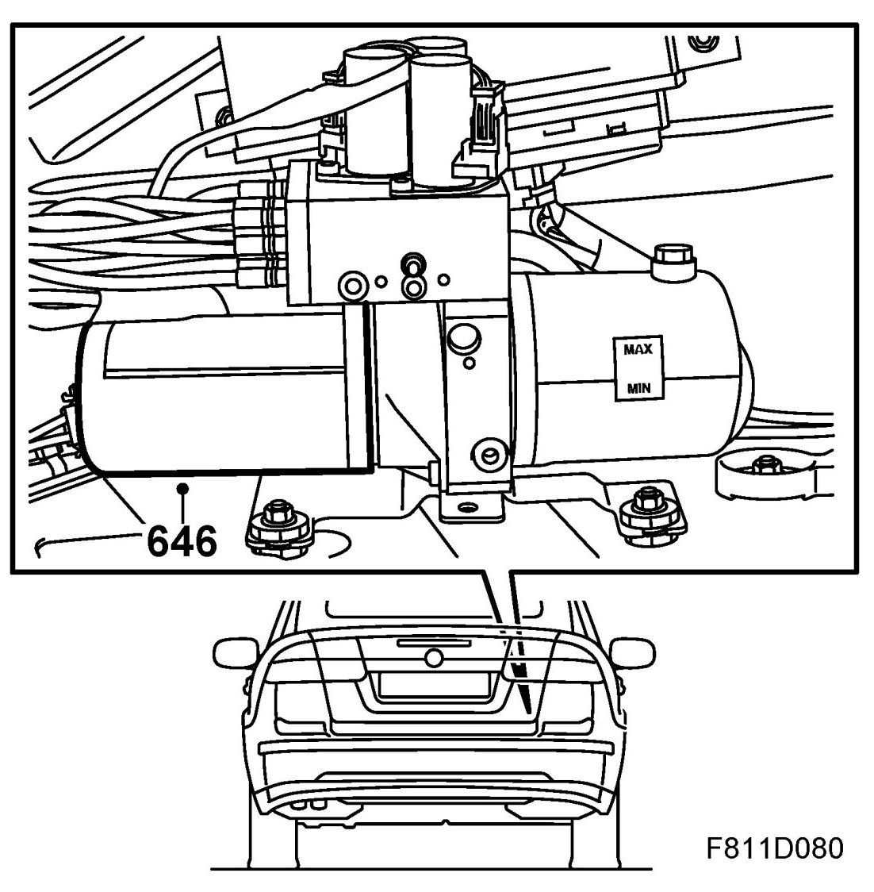
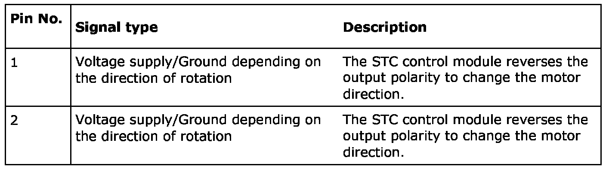
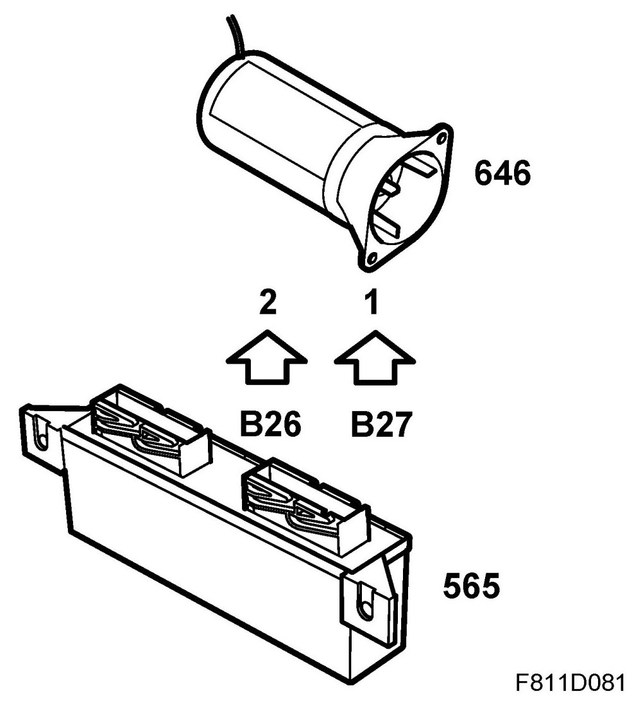
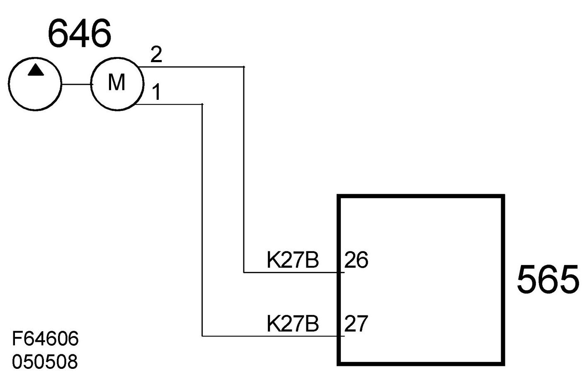

Electrical Diagrams
Motor, Hydraulic Pump, Soft Top (646)
Location
Motor, hydraulic pump, soft top (646)

Main task
The pump motor drives the hydraulic pump.
Type
DC motor.
Technical data
Connection


The STC control module reverses the output polarity to change the motor direction.
Diagram
